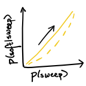
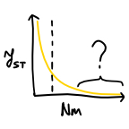
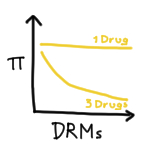
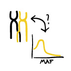

Feder Research Group in Evolutionary Dynamics
Our goal is to understand the dynamics of rapidly-evolving populations, especially viruses evolving within their hosts and solid tumors progressing to malignancy. In particular, we are characterizing how spatial organization shapes these evolutionary outcomes, and developing approaches to leverage spatial data to better understand evolutionary histories.
The lab will be opening in Summer 2021 in the Department of Genome Sciences at the University of Washington. To learn more about the goals of the lab, please check out the research and publication pages.
The lab will accept graduate students through the Genome Sciences PhD program. Prospective graduate students, rotation students and postdoctoral fellows are encouraged to get in touch with Alison.

Research
Population genetics was developed around the idea that adaptive variation is rare, and populations must typically wait for the next beneficial mutation. However, we increasingly realize that in a wide variety of natural populations, including pathogens evolving in their hosts and cancer cells in tumors, many beneficial mutations exist simultaneously (i.e., ones that increase growth rate or allow replication in the presence of drugs) and those mutations can spread in concert. Even though such populations create some of the world's most urgent medical and agricultural problems, our understanding of their evolution is limited by the historical assumptions of population-genetic theory. In the Feder lab, our goal is to understand evolutionary dynamics in this era of abundant genetic variation.
Spatial structure becomes crucially important in the regime where populations rapidly produce beneficial mutations. Structure sets the pace for how beneficial mutations compete and spread. This provides both opportunity and challenge: watching how mutations spread in space allows crucial insights into the degree of parallelism in adaptation, the way that beneficial mutations interact to influence fitness, and the underlying natural history of these populations. However, spatial structure also shapes the adaptive responses themselves. As a result, where beneficial mutations happen to arise may be more important for the ensuing population dynamics than what the mutations are at the molecular scale. When space constrains competition we have an incomplete theoretical understanding of the resulting population dynamics. Despite the growing availability of spatially-resolved genetic data, we need new techniques to draw inferences from spatially and temporally-sampled populations, and corresponding new frameworks to understand the patterns that rapid evolution leaves in time and space.
We combine evolutionary theory and computation with genomic data sampled from clinical and experimental settings to understand the forces that drive rapid adaptation across space. We work across multiple types of spatial organization, considering especially rapid within-host viral evolution and adaptive dynamics in solid tumors. We leverage data collected in time series and with explicit attention to spatial location, and develop new quantitative techniques to analyze data of this form. We characterize the patterns rapid adaptation leaves in space and through time, and in turn, determine how space can and does shape these processes.
Joining the lab
Postdoctoral fellows
Potential postdoctoral fellows are very much encouraged to get in touch. Generally the most useful emails will touch on your background and previous work, how our research interests may intersect, your timeframe for seeking a position and will include a copy of your CV.PhD students
The lab accepts graduate students through the Genome Sciences graduate program. Prospective graduate students are very welcome to get in touch with questions about the lab, although this is not required to gain admittance to the program. Applications are due Dec 1.Currently a grad student in GS interested in a rotation starting in Summer 2021? Feel free to reach out to chat about project ideas!
Undergraduate and high school students
The lab does not currently have research positions open for undergraduate or high school students, but these are positions we are looking to add soon.Contact
E-mail: alison.feder@gmail.com
We're located in Foege Hall S103 in the Department of Genome Sciences.
Publications
You can find a current and complete list of publications on Google scholar.
 Understanding patterns of HIV multi-drug resistance through models of temporal and spatial drug heterogeneity
(2021)
Understanding patterns of HIV multi-drug resistance through models of temporal and spatial drug heterogeneity
(2021) [pre-print]
Alison Feder, Kristin Harper, Pleuni Pennings

The clarifying role of time series data in the population genetics of HIV (2021)
[paper in PLOS Genetics]
Alison Feder, Pleuni Pennings, Dmitri Petrov
 Evolutionary dynamics in structured populations under strong population genetic forces (2019)
[paper in G3]
Alison Feder, Pleuni Pennings, Joachim Hermisson*, Dmitri Petrov*
 The relationship between haplotype-based FST and haplotype length (2019)
The relationship between haplotype-based FST and haplotype length (2019) [paper in Genetics, video abstract]
Rohan Mehta, Alison Feder, Simina Boca, Noah Rosenberg
 Within-patient HIV mutation frequencies reveal fitness costs of CpG
dinucleotides, drastic amino acid changes and G->A mutations
(2018)
Within-patient HIV mutation frequencies reveal fitness costs of CpG
dinucleotides, drastic amino acid changes and G->A mutations
(2018) [paper in PLOS Genetics]
Kristof Theys*, Alison Feder*, Maoz Gelbart*, Marion Hartl, Adi Stern, Pleuni Pennings
 High resolution spatio-temporal assessment of SHIV evolution reveals a highly dynamic
process within the host (2017)
High resolution spatio-temporal assessment of SHIV evolution reveals a highly dynamic
process within the host (2017) [paper in PLOS Pathogens, video abstract]
Alison Feder, Christopher Kline, Patricia Polacino, Mackenzie Cottrell, Angela Kashuba, Brandon Keele, Shiu-Lok Hu, Dmitri Petrov, Pleuni Pennings*, Zandrea Ambrose*
 More effective drugs lead to harder selective sweeps in the evolution of drug resistance in HIV-1 (2016)
[paper in eLife, video abstract]
Alison Feder, Soo-Yon Rhee, Susan Holmes, Bob Shafer, Dmitri Petrov* and Pleuni Pennings*
 The population genetics of drug resistance evolution in natural populations of viral, bacterial and eukaryotic pathogens. (2016)
The population genetics of drug resistance evolution in natural populations of viral, bacterial and eukaryotic pathogens. (2016)[paper in Molecular Ecology]
Ben Wilson*, Nandita Garud*, Alison Feder*, Zoe Assaf*, and Pleuni Pennings

Identifying Signatures of Selection in Genetic Time Series (2014)
[paper in Genetics]
Alison Feder*, Sergey Kryazhimskiy*, Joshua Plotkin
 LDx: estimation of linkage disequilibrium from high-throughput pooled resequencing data.
LDx: estimation of linkage disequilibrium from high-throughput pooled resequencing data. [paper in PLOS One, download LDx]
Alison Feder, Dmitri Petrov, Alan Bergland
 Natural selection affects multiple aspects of genetic variation at putatively neutral sites across the human genome. [paper in PLOS Genetics]
Kirk Lohmueller, Anders Albrechtsen, Yingrui Li, Su Yeon Kim, Thorfinn Korneliussen, Nicolas Vinckenbosch, Geng Tian, Emilia Huerta-Sanchez, Alison Feder, Niels Grarup, Torben Jorgensen, Tao Jiang, Daniel R. Witte, ... , Rasmus Nielsen
Media
- Video abstract for 'The Relationship Between Haplotype-Based FST and Haplotype Length':
- Video abstract for 'A spatio-temporal assessment of simian/human immunodeficiency virus (SHIV) evolution reveals a highly dynamic process within the host':
Team

Alison Feder (she/her)
Principal investigator [CV]alison.feder@gmail.com
You? Learn more about joining the lab.